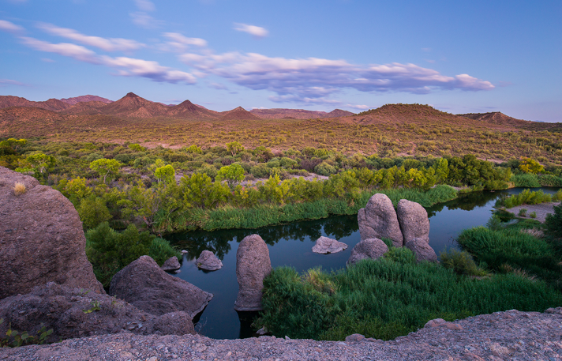
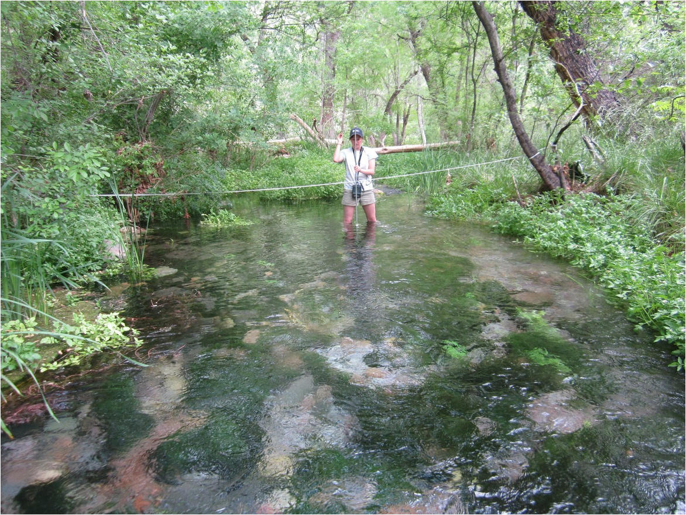

关于联盟
携手合作，让泉水保护更有力量。
一个连接全球组织与个人的网络，共同保护、恢复并可持续管理泉水及依赖泉水的物种。
为什么需要联盟
世界各地正在开展出色工作，但太多时候彼此孤立。
知识并不总能到达最需要它的人手中，成功的方法也可能只停留在当地。组织可能缺少合作伙伴、专业能力或资源。联盟的使命是连接并强化这些工作，而不是取代它们。

愿景 & 使命
愿景. 使命.
愿景
一个泉水得到认可、重视、保护和恢复，并被视为维系水资源、生物多样性、文化和社区的重要生态系统的世界。
使命
动员人员、知识和资源，推进泉水管理，以促进全球生物多样性和人类福祉。
参与。赋能。提升。
推动集体行动的三项目标。
参与
建设全球泉水保护社区
让多元利益相关方和权利持有者参与其中，共享认识、协调行动并建设社区。
赋能
加强保护能力
培养有效泉水管理所需的技能、知识和机构能力，以满足人类与自然的需求。
提升
加速保护行动
动员资源，加快行动并加强政策，以优化泉水管理。
